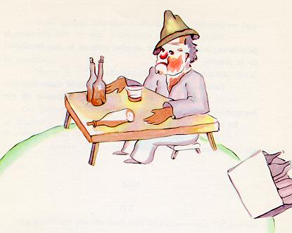

小王子所访问的下一个星球上住着一个酒鬼。访问时间非常短，可是它却使 小王子非常忧伤。

“你在干什么？”小王子问酒鬼，这个酒鬼默默地坐在那里，面前有一堆酒 瓶子，有的装着酒，有的是空的。
“我喝酒。”他阴沉忧郁地回答道。
“你为什么喝酒？”小王子问道。
“为了忘却。”酒鬼回答。
小王子已经有些可怜酒鬼。他问道：“忘却什么呢？”
酒鬼垂下脑袋坦白道：“为了忘却我的羞愧。”
“你羞愧什么呢？”小王子很想救助他。
“我羞愧我喝酒。”酒鬼说完以后就再也不开口了。
小王子迷惑不解地离开了。
在旅途中，他自言自语地说道：“这些大人确实真叫怪。”